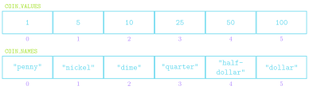

Jed Rembold
October 18, 2023
Which of the below functions’ output would create the shape to the right?
def shape():
p = GPolygon()
p.add_vertex(0,0)
p.add_vertex(2,0)
p.add_edge(0,2)
return pdef shape():
p = GPolygon()
p.add_vertex(2,2)
p.add_edge(-2,2)
p.add_edge(0,2)
return pdef shape():
p = GPolygon()
p.add_vertex(0,0)
p.add_vertex(2,0)
p.add_vertex(-1,2)
return pdef shape():
p = GPolygon()
p.add_edge(2,0)
p.add_vertex(0,0)
p.add_edge(0,2)
return pGCompound class makes it possible to
combine several graphical objects so that the entire structure behaves
as a single objectGWindow and
GObject
GCompound,
you place them relative to the reference pointGCompound to a canvas,
you set the location of the reference pointdef my_axe():
def create_axe():
axe = GCompound()
shaft = GRect(-15, 0, 30, 300)
shaft.set_filled(True)
shaft.set_color("brown")
axe.add(shaft)
blade = GPolygon()
blade.add_vertex(0, 0)
blade.add_vertex(200, -50)
blade.add_vertex(200, 50)
blade.set_filled(True)
blade.set_color("gray")
axe.add(blade, -80, 50)
return axe
gw = GWindow(500, 500)
axe = create_axe()
gw.add(axe, 250, 100)[, ]) with
commas separating each element of the sequence
['This', 'is', 'a', 'list']['Great', 4, 'storing', 5 * 10]Lists are commonly represented visually or conceptually as a series of numbered boxes:
COIN_VALUES = [1, 5, 10, 25, 50, 100]
COIN_NAMES = [ "penny", "nickle", "dime",
"quarter", "half-dollar", "dollar" ]
len function+ or
+=*in operatorcool = ['blue', 'violet']
warm = ['red', 'orange']
colors = [cool, warm]
other_colors = [['blue', 'violet'],
['red', 'orange']]
print(colors == other_colors)
print(colors is other_colors)
cool[0] = 'indigo'
warm = ['orange', 'yellow']
print(colors)
print(other_colors)